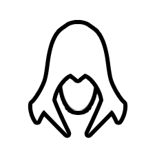
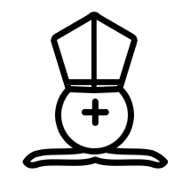
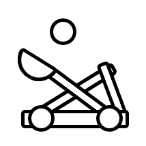
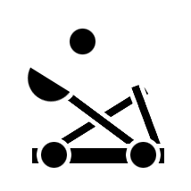
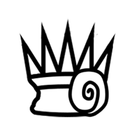
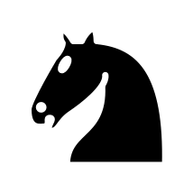
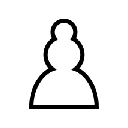
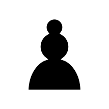
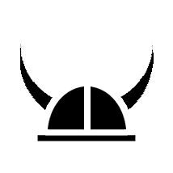

Ouroboros King: How to Play
Home
Overview
The rules of Ouroboros Chess are similar to standard chess.
Here are the main differences:
- Check and checkmate do not exist.
Instead, you win by capturing your opponent's king.
- There are many types of pieces.
You can always hover over a piece to explain its movement.
- Some tiles have special effects on them.*
- You can choose up to eight pieces
(with a maximum of one king) to set up as your layout.
- Each player's layout is randomly placed on their
side of the board.*
*Note: These are affected by the seed.
Using the same seed allows for the same random setup for these.
Pieces
Agent +: Moves like a Rook, then turns into Agent X.
Agent X: Moves like a Bishop, then turns into Agent +.
Andromeda of the Stars: Moves like a Manticore or Gryphon.

Assassin: Moves like a King. If it captures another piece, it can move again.
Berserker: Like a Viking, but can make up to three moves.
Bishop: Can move any number of squares diagonally.
Blade Dancer: Acts like an Assassin. Can move anywhere on the outline of a 5x5 square centered on it.
Bowman: Can move two or more squares cardinally or diagonally; like a Queen minus a King.

Cardinal: Can move like a Bishop or a King.


Catapult: Can move up to two squares horizontally without jumping or jump anywhere in the same column.
Crusader: Can move diagonally forward or vertically backward.

Edea the Witch Queen: Can move like a Rook, Bishop, or Knight.
 Fool: Moves like the previous piece the opponent moved. Cannot move on the first turn.
Fool: Moves like the previous piece the opponent moved. Cannot move on the first turn.
Golem: Moves like a Rook, King or Knight, but only if it can capture on that move.
Gryphon: Moves one square diagonally, then any number of squares cardinally.
Immortal: Moves like a King. Can only be killed by a king.
King: Moves one square cardinally or diagonally. If it is captured, you lose.

Knight: Jumps two squares horizontally and one square vertically or vice versa.
Knight Templar: Moves diagonally or vertically any number of squares. Effectively a Queen without horizontal movement.
Leper: Moves like a King. When captured, turns its capturer into a Leper unless it was captured by a king.
Manticore: Moves one square cardinally, then any number of squares diagonally.


Marching Pawn: Moves up to two squares forward or one square diagonally. Can only capture diagonally. If it gets to the last row, it turns into a Queen for the rest of the game.
Mounted King: Moves like a King or Knight. If it is captured, you lose.
Pegasus: Can make one or two knight moves in the same direction, jumping over all intervening squares.
Portal Mage: Can move to any unoccupied square. Can only capture like a King.
Princess: Can move like a King or two squares diagonally. When it captures, it turns into a Queen for the rest of the game.
Queen: Moves like a Bishop or Rook.
Rook: Can move any number of squares in a cardinal direction.
Tabitha the Deceptive: Can move like any enemy piece except a Portal Mage.
Unicorn Cavalry: Moves like a Rook or Knight.

Viking: Can move up to three times in a cardinal direction. Not all moves have to be in the same direction.
Tiles
Bomb: When captured, destroys all pieces around it
(including the bomb and the capturing piece).
Portal Gate: These always appear as a pair.
Moving into one results in the same movement out of the other.
Rock: This blocks any movement through it and cannot be captured.